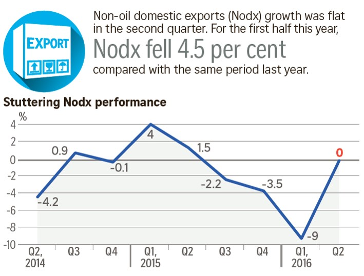

Lesson 1
Introduction to Visual Analytics and Applications
What will you learn from this lesson?
- Motivation of Visual Analytics
- What is Visual Analytics
- Learning from the history of visual analytics
- Data Visualisation tools
Welcome to Lesson 1: Introduction to Visual Analytics. In this lesson, I am going to share with you the motivation of this course. This is important because it allows you to understand where I am coming from, as well as getting better understanding to the focus of this course.
This lesson consists of four major sections. First, I will share with you the motivation of this course. This is followed by a discussion on the building block of visual analytics. In the third section, I am going to use four historical data visualisation to differentiate visual analytics from statistical graphics. Lastly, the typology of data visualisation tool kits will be disucssed.
Motivation of Visual Analytics
The World is full of charts that lie!

We need to get smarter about visual information
It is very common you see infographic of this kind appears on our daily newspaper. At a first glance, it seems making a lot of sense. But, when we try to take a closer look at the text and graph, you will notice that there are at least two major issues, one is related to truthfulness of the data visualisation and the second one is related to its clarity aspect. For example, the x-axis is showing quarterly time interval. But, the second sentence talks about “For the first half this year, Nodx fell 4.5 per cent compared with the same period last year.” which is not inline with what was shown on the x-axis. Furthermore, the values on the y-axis are in per cent. Hence the correct term should be percentage point instead of per cent because we are comparing the differences between two percentages.
This is what motivate me to design this course. This course is not about using Tableau or R to create beautiful data visualisation only. More importantly, it aims to embark you the skills of getting smarter when reading data visualisation. From today onwards, I would like to encourage you to take a good look at every data visualisation you come across and carefully evaluate them not only from their aestheticness only but also their clarity.
Motivation of Visual Analytics
Junk charts are good for advertising but not for understanding.
In business, it is very common we see marketing data visualisation similar to the one on this slide. I call this Junk Chart. As we know, junk foods are very tempting but not healthy. Similar, Junk Charts tends to be very appealing but they are not useful to gain data understanding. For example, it is not possible for us to do an effective comparison between global sales revenue and reinvestment in R&D because of the inappropriate use of 3d bar chart.
The important take away from this slide is to avoid creating eye candy data visualisation. We should create data visualisation that are functional instead.
Motivation of Visual Analytics
Data rich, information poor

Source: Big Data Ocean
{kind=link}
In this big data age, data analyst tends to flooded with large amount of data. Before she/he can build any effective model by using advanced AI/ML techniques, she/he need to first understand the data and data visualisation is one of the most commonly used approach.
Motivation of Visual Analytics
The World is buried in data,
Just SHOW me the number
Unfortunately, Up until very recently, data analysts tend to depend on spreadsheet to visualisation these large volume of data. No doubt, spreadsheet is an effective tool for organising, tabulating and processing data but it not appropriate for creating graph that are enlightening.
Many of you might not agree with me. Let me use the next slide to explain my point.
Motivation of Visual Analytics
Spreadsheet: A great hammer but lousy screwdriver

Visual analytics come to the rescue

As all of you will notice that the data visualisation on the left were created using Microsoft Excel charting function. It shows the results of five models output. Unfortunately, it is not easy to compare the differences between them. This is partly because the value range of their y-axis are not the same. Further more by stitching the line graph top down and next jump to the right fail for support effective comparison.
The data visualisation on the right is a makeover version. It was created using the trellis method of JMP Pro. In this case, all line graphs maintain the same value range. As a result, the data visualisation reveals the differences between the five models clearly.
Also, by arranging the model results from left to right according to their calibration, allows us to compare the performance of each model effectively.
Motivation of Visual Analytics
When statistics failed!


Data analysis without data visualisation is no data analysis
As a data analyst, we tend to use statistics to describe data distribution. However, these might not be enough without data visualisation.
This slide shows a data sets of four groups of observation. When their summary statistics such as mean and standard deviation were computed. It is interesting to note that they are all having the similar values. In fact, even the correlation coefficient and best fit line equations are similar.
Motivation of Visual Analytics
Analytical graphics reveal the truth

However, when we plot these data by using scatter plot method as shown on the slide, it is interesting to note that they reveal very different patterns.
Motivation of Visual Analytics
Is there a place for Visual Analytics in knowledge discovery?
The important take away from this example is that it is always useful to use data visualisation to complement data modelling. As shown in the figure. In a knowledge discovery process, visual analytics provide data analysts useful understanding of the data. These understanding can be used to support effective model building.
Data visualisation also should be used to reveal modelling results. Furthermore, by using data visualisation to communicate complex modelling results to senior management, in general, are more effectively than showing them complex equations.
Motivation of Visual Analytics
Open data need to be unlocked!

Visit the link
Recently, there is an increasing available of open source data from the public sector. However, to put these data into good use for informed decision making, we also need appropriate analytics tools. By and large, the COS analytics software are too costly and beyond the reach of SME and casual users. On the other hand, free and open source analytical APIs tend to require certain level of proficiency in programming which is not a common skill posses by business analysts.
Motivation of Visual Analytics
Democratising Data and Analytics with Visually-driven Web Apps

Visit the link
In view of this, I strongly belief that it is important for our MITB (Analytics) students master the skill of building visually-driven web-based data analytics applications to democratise data and analytics.
The link on this slide shows an example of a visual analytics web application designed using R packages and Shiny, a framework and API for building web application in R.
The advantage of this approach is that it allows users to perform the analysis without having to learn programming. Furthermore, data visualisation are used extensively in the modelling process. For visual Analytics applications developers, their only need learn one programming languasge which is R instead of a collection of web development languages such as html, javascripts and css.
What is Visual Analytics?
Visual Analytics is the craft of analytical reasoning supported by:
- Data Science and Analytics
- Data Visualisation
- Human-Computing-Interaction (HCI)
- Interface Design
- Visual Storytelling

The marriage of data analytics and visualizations
This slide aims to explain the building block of Visual Analytics. It is the craft of …………..
What is Visual Analytics?
Science of Visual Analytics
What is Visual Analytics?
Aims of Visual Analytics
Although visual analytics comprises of many scientific disciplines. It is important to note that the goal of a visual analytics is to help data analyst to discover the unexpected from data effectively.
What is Visual Analytics?
Visual Data Sense-making
Visual Analytics’ greatest strength is its use for sense-making.
Different from statistical analysis, machine learning and AI, Visual analytics emphasise on visual sensing rather than mathematics and statistical skills.
What is Visual Analytics?
Visual Analytics Framework

As a results, when we do Visual Analytics, we need to immerse our in a highly interactive environment. Our eyes will be used to detect the unusual visual pattern with the help of appropriate data visualisation method(s). Our brain will then interpret and synthesise the visual information and send impulses to our hand to change the view in search of new visual patterns
What is Visual Analytics?
Visual Analytics require a shift of mindset

Traditionally, statistical graphics are used for visual communication alone. Visual Analytics require a major paradigm shift from visual communication to visual thinking. Data Visualisation or statistical graphics should be used to support data exploration and analysis instead of visual communication alone. Having said that, this does not mean that visual communication is no longer important. Instead, the new paradigm shift requires us to give equal focus on both visual thinking and visual communication.
What is Visual Analytics?
Learning from the history of Visual Analytics
Commercial and Political Atlas by William Playfair (22 September 1759 – 11 February 1823)

Speaking about Visual Analytics, there are a lot we can learn from history. The line graph on the slide is a good example. This is a trade balance line graph prepared by William Playfair in 1786. You probably have identify this chart as a common line graph. The horizontal axis is years, the vertical axis measures the volume of imports and export. When you take a good look at the graph, you will be very impressed by conscious effort given by the author to shade the space between the import and export lines. When the trade balance was against England, the area was shared in red and when the trade balance was in favour of England, the area was shaded in brown. With the advancement of graph drawing tools, sadly to say, we hardly see this carefully crafted line graph been used.
What is Visual Analytics?
Learning from the history of Visual Analytics
Cholera and the Pump on Broad Street(John Snow, 1854).

The map on this figure is the ground breaking used of map in medical science. It was one of the many versions prepared by John Snow and published in 1854. If you take a closer look at the map, you will notice that it is not a normal dot map we commonly prepared using Google Map or other data visualisation toolkits like Tableau or PowerBI. In the map, cholera cases are highlighted in black, showing the clusters of cholera cases (indicated by stacked rectangles) in the London epidemic of 1854. The map marks an important part of the development of epidemiology as a field, and of disease mapping as a whole.
What is Visual Analytics?
Learning from the history of Visual Analytics
Florence Nightingale: The compassionate statistician(12 May 1820 – 13 August 1910)

The third example is the famous rose diagram or coxcombs prepared by Florence Nightingale. Many of us know Florence as The Mother of Nursing, but she was also a statistician, and reformer. If we look at the rose diagram, we can see that the area of each coloured wedge, measured from the centre, is in proportion to the statistic it represents. The blue outer wedges represent the deaths from contagious diseases, such as cholera and typhus. The central red wedges show the deaths from wounds. The black wedges in between represent deaths from all other causes. If this rate had continued, and troops had not been replaced frequently, then disease alone would have killed the entire British Army in the Crimea. Nightingale’s graph not only dramatised the extent of the needless deaths among the soldiers during the Crimean War, but it was used as a tool to persuade Victorial government and medical profession that deaths were preventable if sanitation reforms were implemented in military and civilian hospitals.
What is Visual Analytics?
Learning from the history of Visual Analytics
Plot of Napoleon’s ill-fated Russian campaign of 1812-1813 (Charles Joseph Minard,1861)

The last example is the famous Charles Joseph Minard’s Napoleon’s Russian campaign chart. At the first glance, it resemble the flow map but the map actually reveal more information than a common flow map. The illustration depicts Napoleon’s army departing the Polish-Russian border. A thick band illustrates the size of his army at specific geographic points during their advance and retreat. It displays six types of data in two dimensions: the number of Napoleon’s troops; the distance traveled; temperature; latitude and longitude; direction of travel; and location relative to specific dates without making mention of Napoleon; Minard’s interest lay with the travails and sacrifices of the soldiers. This type of band graph for illustration of flows was later called a Sankey diagram, although Matthew Henry Phineas Riall Sankey (9 November 1853 – 3 October 1926) used this visualisation 30 years later and only for thematic energy flow. Interestingly, If you take a closer look at the lower center of the graph, you will notice that the term Tableau Graphique was used.
The important learning lesson from these four historical data visualisation is that in order to design a functional and yet enlightening data visualisation, we need to master the science and arts of data visualisation design instead of using default graphing functions of modern data visualisation toolkit. Just like writing, by knowing how to use MS Word, you will not be able to become a great editor.
What is Visual Analytics?
Visual Analytics must be Reproducible
- For every result, keep track of how it was produced.
- Avoid manual data manipulation steps.
- Archive the excat versions of all external programmes used.
- Version control all custom scripts.
- Record all intermediate results, when possible in standard formats.
- For analysis that include randomness, note underlying random seeds.
- Always store raw data behind plots.
- Generate hierarchical analysis output, allowing layers of increasing detail to be inspected.
- Connect textual statements to underlying results.
- Provide public access to scripts, runs, and results.

One of the biggest challenge of visual analytics is reproducibility. In this course, you will learn the skill of building reproducible data visualisation by using RMarkdown in order to ensure that all the steps and codes used to build the data visualisation are comprehensively documented and can be reproduced by others.
Data Visualisation Toolkits
- Commercial-off-the-shelf
- Visual analytics tookit such as Tableau, JMP, PowerBI, Qlik Sense/View & TIBCO SpotFire.
- Specialised data visualisation applications such as TreeMap from Macrofocus
- Open source
In general, we can divide the data visualisation toolkit into two main groups namely, Commercial of the shelf also known as COS and open source. A good example of COS data visualisation toolkits are Tableau, Qlik View/Sense.
COS Data Visualisualisation Toolkit
Magic Quadrant for BI and Analytics Platforms
COS Data Visualisation Toolkit

Tableau: A data visualisation tool for everyone
- Theory to practice
- The Grammar of Graphics
- Science to product
- VisQL
- Show Me
- Polaris
Programmable Data Visualisation Library
Data Visualisation Toolkit for Data Journalism
Recently, there are two well developed web-based data visualisation designed specially designed for supporting data journalism. The advantage of these two toolkits are they do not need any installation and can be accessed any way as long as there is internet access.
Highly recommended blogs
This slide provides you the links to three highly recommended data visualisation blogs. I strongly encourage students to visit bookmark them and visit them often not only during these course but also when you go our to practice.